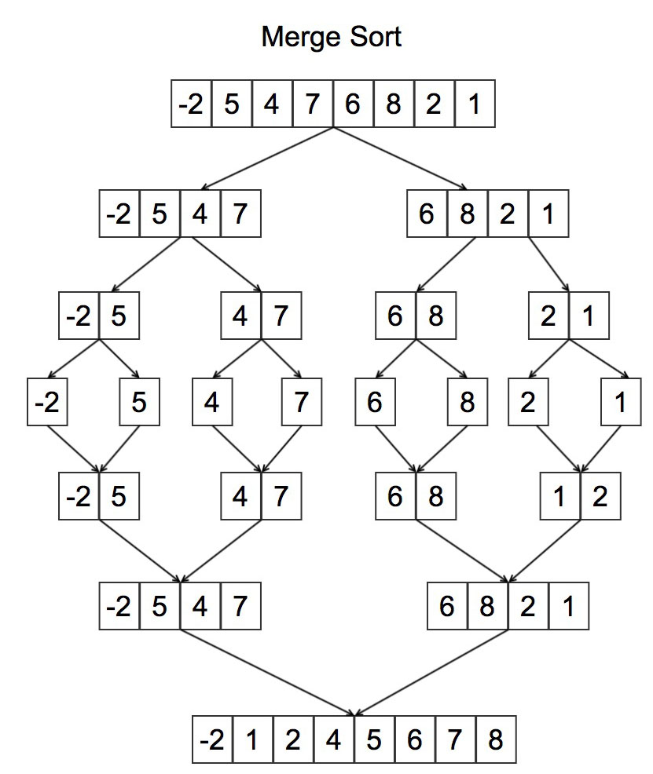

In Javascript, implement the Bubble Sort algorithm and state the complexity
for the worst case scenario.Refer to the Figure 1.1 above for illustration.
function bubblesort(arr){
var swapped;
do{
swapped=false;
for(var i=0; i < arr.length; i++){
if(arr[i]>arr[i+1]){
var temp=arr[i];
arr[i]=arr[i+1];
arr[i+1]=temp;
swapped=true;
}
}
} while(swapped)
return arr
}
In Javascript, implement the Insertion Sort algorithm and state the
complexity for the worst case scenario. Refer to figure 1.2 above for illustration.
function insertionSort(arr){
var value,i,j;
for(i=0; i < arr.length; i++){
value=arr[i];
//check to see if previous value is greater than the current value in the array.
//If it is, swap positions and keep swapping backwards until you
//get a value that is less than our current value. Once you get there,
// insert your current value in that position.
//inner loop executes
for(j=i-1; j>-1 && arr[j]>value; j--){
arr[j+1]=arr[j];
}
//insert our current value into the place in the array where it is greater
//than the value before it.
arr[j+1]=value;
}
return arr;
}
Worst case space complexity: $O(n^2)$ total $O(1)$ auxiliary
A&D Problem #3: Merge Sort

Figure 1.3
In Javascript, implement the Merge Sort algorithm and state the complexity
for the worst case scenario. Refer to figure 1.3 above for illustration.
function merge(leftarr,rightarr ){
var result = [];
var il = 0;
var ir = 0;
while(il < leftarr.length && ir < rightarr.length){
if(leftarr[il] < rightarr[ir]){
result.push(leftarr[il]);
il++;
}
else{
result.push(rightarr[ir])
ir++;
}
}
return result.concat(leftarr.slice(il)).concat(rightarr.slice(ir))
}
function mergeSort(arr){
if(arr.length < 2){
return arr;
}
else{
//divide
var mid=Math.floor(arr.length/2);
var left=arr.slice(0,mid);
var right=arr.slice(mid);
//conquer
//mergeSort:two (left and right) recursive calls with n/2 value
//merge will execute n times to merge the left and right arrays.
return merge(mergeSort(left), mergeSort(right))
}
}
Recurrence for the Merge Sort:
$ T(n)=2T( \frac{n}{2})+ \Theta({n})$
Using the Master Theorem for Divide and Conquer, the Time Complexity for worst case is:
$T(n)=\Theta({nlogn})$
Performance:
Worst case complexity: $\Theta(nlogn)$
Best case complexity: $\Theta(nlogn)$
Average case complexity: $\Theta(nlogn)$
Worst case space complexity: $\Theta(n)$ auxiliary